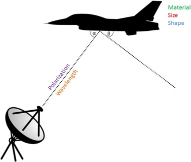
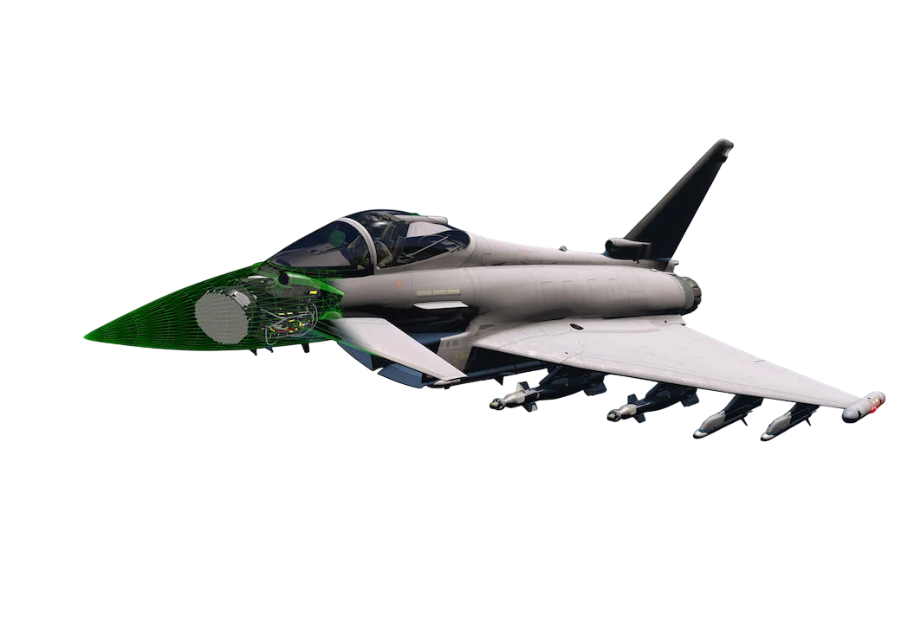

Технология малозаметности (Stealth)
Стелс — это комплекс способов снижения заметности боевых машин в радиолокационном, инфракрасном и других областях спектра обнаружения.
- • Геометрия: Острые грани для рассеивания радиоволн.
- • Покрытие: Радиопоглощающие материалы (RAM).
- • Внутренние отсеки: Оружие скрыто внутри фюзеляжа.


АФАР (AESA Radar)
Активная фазированная антенная решетка — это вершина радиолокации. В отличие от старых радаров, здесь каждая ячейка на решетке является самостоятельным передатчиком.
- • Многофункциональность: Одновременная работа по земле и воздуху.
- • Скрытность: Сложный сигнал трудно засечь и подавить помехами.
- • Надежность: Выход из строя нескольких модулей не отключает весь радар.